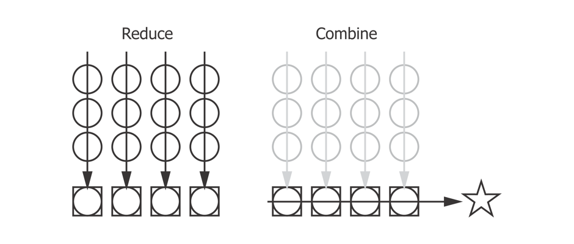

Expressive Parallel Analytics with Transducers
Who am I?
Mission-critical analysis

Metastatistics
https://www.timeshighereducation.com/news/ranking-methodology-2016
- 13 performance indicators
- 10 quotient indicators
- 4 weighted quotients across 6 subjects
- 1,000+ institutions
- 7 ranking tables
Annoying-sized data
Analytic sequence
- Load & join
- Apply rules
- Apply filters
- Normalise data
- Harmonise units
- Summary statistics
- Harmonise ranges
- Calculate score
- Output
- x 13 x 7
Mean
(let [sum (reduce + xs) count (count xs)] (when-not (zero? count) (/ sum count)))
Reduce
(defn mean-r [accum x] (-> (update-in accum [:sum] + x) (update-in [:count] inc))) (reduce mean-r (range 10))
Uh-oh
1. Unhandled java.lang.NullPointerException (No message) Numbers.java: 1013 clojure.lang.Numbers/ops Numbers.java: 128 clojure.lang.Numbers/add core.clj: 957 clojure.core/+ AFn.java: 156 clojure.lang.AFn/applyToHelper RestFn.java: 132 clojure.lang.RestFn/applyTo core.clj: 632 clojure.core/apply core.clj: 5923 clojure.core/update-in RestFn.java: 467 clojure.lang.RestFn/invoke REPL: 2 example.core/mean-r LongRange.java: 222 clojure.lang.LongRange/reduce core.clj: 6514 clojure.core/reduce REPL: 1 example.core/eval100286
Reduce
(defn mean-r [accum x] (-> (update-in accum [:sum] + x) (update-in [:count] inc))) (reduce mean-r {:sum 0 :count 0} (range 10)) ;; => {:sum 45, :count 10}
Reducing function lifecycle
- Init
- Step (0..n)
- Complete
Mean reducing function
(defn mean ([] {:sum 0 :count 0}) ([{:keys [sum count]}] (/ sum count)) ([accum x] (-> (update-in accum [:count] inc) (update-in [:sum] + x)))) (->> (load-data "data.edn") (transduce (comp xform (map :score)) mean-step)) ;; 405.0
Thread-last
(->> (load-data "data.edn") (select-relevant) ;; Apply filters (convert-currency) ;; Normalize (assign-score))
Sequence functions
- map
- filter
- remove
- keep
- take
- partition
Threading II
(->> (load-data "data.edn") (filter relevant?) (map convert-currency) (map assign-score)) ;;({:name "A", :fx 0.8, :a 112.5, :b 62.5, :score 175.0} ;; {:name "B", :fx 0.2, :a 400.0, :b 400.0, :score 800.0} ;; {:name "D", :fx 0.5, :a 100.0, :b 140.0, :score 240.0})
Mapping
(Image of guitar and amp)
Solved?
(defn process [data] (->> (filter relevant? data) (map convert-currency) (map assign-score))) (process (load-data "data.edn")) ;;({:name "A", :fx 0.8, :a 112.5, :b 62.5, :score 175.0} ;; {:name "B", :fx 0.2, :a 400.0, :b 400.0, :score 800.0} ;; {:name "D", :fx 0.5, :a 100.0, :b 140.0, :score 240.0})
…Not really
(def v [1 2 3 4]) ;; #'user/v (type v) ;; clojure.lang.PersistentVector (type (map inc v)) ;; clojure.lang.LazySeq (type (mapv inc v)) ;; clojure.lang.PersistentVector
Enter Transducers

Effects pedals and speaker
(Image of effects pedals board)
No Seq in Sight
(def xform (comp (filter relevant?) (map convert-currency) (map assign-score)))
Add the sequence
(sequence xform (load-data "data.edn")) ;;({:name "A", :fx 0.8, :a 112.5, :b 62.5, :score 175.0} ;; {:name "B", :fx 0.2, :a 400.0, :b 400.0, :score 800.0} ;; {:name "D", :fx 0.5, :a 100.0, :b 140.0, :score 240.0})
It's an open system
(->> (load-data "data.edn") (sequence (comp xform (take 2)))) ;;({:name "A", :fx 0.8, :a 112.5, :b 62.5, :score 175.0} ;; {:name "B", :fx 0.2, :a 400.0, :b 400.0, :score 800.0}) (->> (load-data "data.edn") (sequence (comp xform (map :score)))) ;; (175.0 800.0 240.0)
Sum up a sequence
(->> (load-data "data.edn") (sequence (comp xform (map :score))) (reduce +)) ;; 1215.0
Image of mic'd amp
Transduce
(->> (load-data "data.edn") (transduce (comp xform (map :score)) +)) ;; 1215.0
Reducing functions
(+) ;; 0 (+ 42) ;; 42 (+ 21 21) ;; 42
(conj) ;; [] (conj [42]) ;; [42] (conj [21] 21) ;; [21 21]
Interquartile range
https://github.com/HdrHistogram/HdrHistogram
(defn hist-iqr ;; Zero arity init ([] (DoubleHistogram. 1e8 3)) ;; Two arity step ([hist x] (doto hist (.recordValue x))) ;; Single arity complete ([hist] (vector (.getValueAtPercentile hist 25) (.getValueAtPercentile hist 75))))
Using the custom step
(->> (load-data "data.edn") (transduce (comp xform (map :score)) hist-iqr)) ;; [175.0 240.0]
Steps
(defn in-range [f from to] (filter #(<= from (f %) to)) (defn iqr-sequence [xform data] (let [[from to] (->> data (transduce (comp xform (map :score)) hist-iqr))] (->> data (sequence (comp xform (in-range :score from to)))))
Variance step function
(defn variance ([] [0 0 0]) ([[count mean sum-of-squares]] (/ sum-of-squares (max 1 (dec count)))) ([[count mean sum-of-squares] x] (let [count' (inc count) mean' (+ mean (/ (- x mean) count'))] [count' mean' (+ sum-of-squares (* (- x mean') (- x mean)))]))) (->> (load-data "data.edn") (transduce (comp xform (map :score)) variance))
Standard deviation
Is the square root of the variance.
Completing
(def standard-deviation (completing variance #(Math/sqrt (variance %))))
Mean of the IQR
(defn in-range f from to) (defn iqr-mean [xform data] (let [[from to] (->> data (transduce (comp xform (map :score)) hist-iqr))] (->> data (transduce (comp xform (in-range :score from to) (map :score)) mean-step)))) ;; 207.5
Concurrent calculation
What if we want to calculate the mean and the standard deviation?
Juxt
(juxt :a :b)
Juxt
(juxt mean-step sd-step)
Juxt
(defn simple-juxt [& rfns] (fn ([] (mapv (fn [f] (f)) rfns)) ([acc] (mapv (fn [f a] (f a)) rfns acc)) ([acc x] (mapv (fn [f a] (f a x)) rfns acc)))) (def rf (simple-juxt + conj)) (transduce (map identity) rf (range 10)) ;; => [45 [0 1 2 3 4 5 6 7 8 9]]
Early termination
(def rf (simple-juxt + ((take 3) conj))) (transduce (map identity) rf (range 10)) ;; => [45 #object[clojure.lang.Reduced 0x643ea00c {:status :ready, :val [0 1 2]}]]
Juxt
(defn juxt [& rfns] (fn ([] (mapv (fn [f] (f)) rfns)) ([acc] (mapv (fn [f a] (f (unreduced a))) rfns acc)) ([acc x] (let [all-reduced? (volatile! true) results (mapv (fn [f a] (if (reduced? a) a (do (vreset! all-reduced? false) (f a x)))) rfns acc)] (if @all-reduced? (reduced results) results)))))
Facet
(defn facet [rf fns] (->> (map (fn [f] ((map f) rf)) fns) (apply juxt))) (transduce (map identity) (facet conj [inc dec]) (range 10)) ;; examples
Weighted mean
Completing allows us to override or extend default.
(defn weighted-mean [nf df] (let [rf (facet mean-step [nf df])] (completing rf (fn [x] (let [[n d] (rf x)] (if (zero? d) 0 (/ n d))))))) (transduce (map identity) (weighted-mean :a :b) (load-data "data.edn"))
Fuse
(defn fuse [kvs] (let [rfns (vals kvs) rf (apply juxt rfns)] (completing rf #(zipmap (keys kvs) (rf %))))) (let [rf (facet (fuse {:mean mean-step :sd standard-deviation}) [:a :b])] (transduce (map identity) rf (load-data "data.edn")))
Fuse
(def summary-stats (fuse {:mean mean-step :sd standard-deviation})) (transduce (map identity) summary-stats (range 100))
Why not just use reduce?
(let [rf (facet (fuse {:mean mean-step :sd standard-deviation}) [:a :b])] (rf (reduce rf (rf) (load-data "data.edn"))))
xform composition
We're used to transforming a sequence with a function.
Why not transform a function with a sequence?
xform composition
(def fields [:a :b]) (def summary-stats (-> (fuse {:mean mean-step :sd standard-deviation}) (facet fields))) (defn normalise [stats] (let [stats (zipmap fields stats) f (fn [x [field {:keys [mean sd]}]] (update-in x [field] cdf-normal :mean mean :sd sd))] (map #(reduce f % stats)))) (defn transform [xform f g xs] (comp xform (g (transduce xform f xs)))) (let [data (load-data "data.edn")] (-> (filter relevant?) (transform summary-stats normalise data)))
Juxt
(defn juxt [& rfns] (fn ([] (mapv (fn [f] (f)) rfns)) ([acc] (mapv (fn [f a] (f (unreduced a))) rfns acc)) ([acc x] (let [all-reduced? (volatile! true) results (mapv (fn [f a] (if (reduced? a) a (do (vreset! all-reduced? false) (f a x)))) rfns acc)] (if @all-reduced? (reduced results) results))))) (def rf (juxt + ((take 3) conj))) (transduce (map identity) rf (range 10)) ;; => [45 [0 1 2]]
Facet
(defn facet [rf fns] (->> (map (fn [f] ((map f) rf)) fns) (apply juxt))) (def rf (facet conj [inc dec])) (transduce (map identity) rf (range 10)) ;; => [[1 2 3 4 5 6 7 8 9 10] [-1 0 1 2 3 4 5 6 7 8]]
Weighted average
(defn weighted-mean [nf df] (let [rf (facet mean-step [nf df])] (completing rf (fn [x] (let [[n d] (rf x)] (if (zero? d) 0 (/ n d))))))) (def rf (weighted-mean :a :b)) (transduce (map identity) rf (load-data "data.edn")) ;; => 7/6
Fuse
(defn fuse [kvs] (let [rfns (vals kvs) rf (apply juxt rfns)] (completing rf #(zipmap (keys kvs) (rf %))))) (def rf (fuse {:one + :two conj})) (transduce (map identity) rf (range 10)) ;; => {:one 45, :two [0 1 2 3 4 5 6 7 8 9]}
Standard deviation
(defn variance ([] [0 0 0]) ([[count mean sum-of-squares]] (/ sum-of-squares (max 1 (dec count)))) ([[count mean sum-of-squares] x] (let [count' (inc count) mean' (+ mean (/ (- x mean) count'))] [count' mean' (+ sum-of-squares (* (- x mean') (- x mean)))]))) (def standard-deviation (completing variance #(Math/sqrt (variance %))))
Harmonise ranges
(def rf (facet (fuse {:mean mean-step :sd standard-deviation}) [:a :b])) (transduce (map identity) rf (load-data "data.edn")) ;; => [{:mean 70, :sd 18.257418583505537} {:mean 60, :sd 18.257418583505537}]
Just use reduce?
(def rf (facet (fuse {:mean mean :sd standard-deviation :iqr interquartile-range}) [:a :b])) (rf (reduce rf (rf) (load-data "data.edn"))) ;; => [{:mean 70, :sd 18.257418583505537} {:mean 60, :sd 18.257418583505537}]
xform composition
We're used to transforming a sequence with a function.
Why not adjust a transform function with a sequence?
xform composition
(defn transform [xform f g xs] (comp xform (g (transduce xform f xs)))) (def fields [:a :b]) (def summary-stats (-> (fuse {:mean mean-step :sd standard-deviation}) (facet fields))) (defn normalise [stats] (let [stats (zipmap fields stats) f (fn [x [field {:keys [mean sd]}]] (update-in x [field] cdf-normal :mean mean :sd sd))] (map #(reduce f % stats)))) (let [data (load-data "data.edn")] (-> (filter relevant?) (transform summary-stats normalise data)))
Enter Reducers
- Prior to transducers
- Avoid intermediate collections
- Bring parallelism through Java's fork/join
Fork / Join
solve(problem): if problem is small enough: solve problem directly (sequential algorithm) else: for part in subdivide(problem) fork subtask to solve part join all subtasks spawned in previous loop combine results from subtasks
Parallel reduce / combine

…schematically

Mean reducers
(require ['clojure.core.reducers :as r]) (defn mean-step ([] {:sum 0 :count 0}) ([accum x] (-> (update-in accum [:count] inc) (update-in [:sum] + x))) ([{:keys [sum count]}] (/ sum count))) (defn mean-combiner ;; Combiner is used for init value ([] {:sum 0 :count 0}) ([a b] (merge-with + a b))) (->> (load-data "data.edn") (into [] (comp xform (map :score))) (r/fold mean-combiner mean-step)) ;; {:sum 1215.0, :count 3}
Intermediate collections revisited
(def scorer (comp xform (map :score))) (->> (load-data "data.edn") (into [] scorer) (r/fold mean-combiner mean-step)) ;; {:sum 1215.0, :count 3} (->> (load-data "data.edn") (r/fold mean-combiner (scorer mean-step))) ;; {:sum 1215.0, :count 3}
Get a reducing function back out
(let [f (weighted-avg :a :b)] (reduce f (f) [{:a 1 :b 2} {:a 4 :b 8}])) ;; [[#object[example.core$wrapping$fn__80296 0x3f478522 "example.core$wrapping$fn__80296@3f478522"] #object[clojure.lang.Volatile 0x573499fb {:status :ready, :val {:sum 5, :count 2}}]] [#object[example.core$wrapping$fn__80296 0x414f525c "example.core$wrapping$fn__80296@414f525c"] #object[clojure.lang.Volatile 0x179ba0e5 {:status :ready, :val {:sum 10, :count 2}}]]]
But is it parallel?
Enter core.async
Core async has a reduce, but no combine.
Combine is just another reduce over the intermediate steps.
(defn pipeline-r [n f g xs] (let [in (async/chan n)] (async/onto-chan in xs) (->> (for [_ (range n)] (async/reduce f (f) in)) (async/merge) (async/reduce g (g)) (async/< !!) (f))))
Simple Regression
(defn calculate-coefficients [{:keys [covariance variance-x mean-x mean-y]}] (let [slope (/ covariance variance-x)] {:intercept (- mean-y (* mean-x slope)) :slope slope})) (defn linear-regression [fx fy fold] (->> fold (t/fuse {:covariance (m/covariance fx fy) :variance-x (m/variance (t/map fx)) :mean-x (m/mean (t/map fx)) :mean-y (m/mean (t/map fx))}) (t/post-combine calculate-coefficients))) (def linear-regression-fold (->> (t/filter relevant?) (t/map convert-currency) (linear-regression :a :b))) (-> (t/chunk 1024 (load-data "data.edn")) (t/tesser linear-regression-fold)) ;; {:intercept 68.05555555555557, :slope 0.6666666666666666}
Reducing function Rules
- Always call completion
- Respect reduced
Summary
- Separate process from substrate
- Transducers, step functions and transducible processes
- Reducing and combining functions
- Create composable, extensible units of computation
- Defer decisions about context
- Benefit
Thanks!
https://github.com/henrygarner/data-science-london-oct-2015

Henry Garner
@henrygarner
If you liked this…
http://cljds.com/cljds-book | http://cljds.com/cljds-amzn